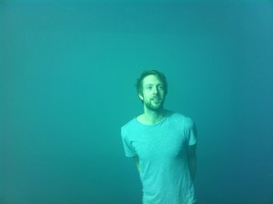

Emosjonelt arbeid i postdramatisk teater med Ivar Furre Aam
- Kategori:
- Kurs og workshops
Kurs og workshops
Åpent for profesjonelle skuespillere, dvs. treårig utdanning i skuespillerkunst eller tilsvarende profesjonell erfaring. - Dato:
- 24.02.2015 til 26.02.2015
- Start kl :
- 11:00
- Slutt kl :
- 16:00
- Pris:
- 450,-
- Adresse:
- Norsk Skuespillersenter, Welhavensgate 1, Oslo

Workshopen vil fokusere på å skape muligheter for nye sceniske forløp med gamle skuespillerteknikker og moderne psykologi.
{kind=link}
Hvordan kan man gå inn i emosjonelle tilstander, hvilke emosjonelle tilstander finnes, er man nødt til å gå inn i dem for å uttrykke dem og er det i det hele tatt mulig å la være?
Workshopen baserer seg på Ivar Furre Aams forestilling "The Expression of the Emotions". Arbeidet består av å se på nye innganger til å spille emosjonelle tilstander.
Med utgangspunkt i moderne psykologi og Hochchilds teori om emosjonelt arbeid ser vi på effektene av å spille følelser, både på publikum og skuespilleren.
Hvilken funksjon har skuespillerens arbeid med emosjoner i kontemporært teater?
Hvordan forholder vi oss kritisk til at produksjon av følelser hos publikum er et mål i kunsten?
Og hvilke konsekvenser får dette emosjonelle arbeidet for oss som skuespillere og privatpersoner?
Å manipulere egne og andres følelser blir sett på som en nødvendig ferdighet for skuespillere. Og med god grunn, vi vet at informasjon som blir kommunisert gjennom emosjonelle slag påvirker oss mer og gjør det lettere å huske.
Er det mulig å komme seg ut av et territorium der emosjoner på scenen støtter opp om et manipulerende formål om å overtale, overbevise eller påvirke tilskueren, dit hen hvor emosjoner bare kan være emosjoner i seg selv, som representeres?
Kurset vil fokusere på teaterets mediespesifikke potensial, der handlingen å produsere følelser blir dekonstruert. I workshopen vil vi se på forskjellige strategier for å finne tak i ekte emosjoner, fake de overbevisende og vi vil stille spørsmålet om det i det hele tatt finnes forskjell på å fake eller føle.
Vi vil deretter gjennom improvisasjonsteknikker, basert på viewpoints og arbeid med scores, se på metoder for å konstruere handlingsforløp der vi utstiller prosessene og leter etter metoder for å komponere sceniske situasjoner og tablåer ut ifra det gitte vokabularet av følelsesuttrykk.
Vi vil bevege oss fra det fullstendig realistiske til det ekstremt abstrakte og der imellom.
Det postmoderne teateret karakteriseres ofte som teater som dekonstruerer et eller flere av sine virkemidler og rekonstruerer de i nye kontekster. Dette kurset handler om å dekonstruere emosjonenes funksjon på scenen for dermed å undersøke hvilke potensialer de innehar.
BIO
Ivar Furre Aam jobber som skuespiller og regissør. Hans forestilling «The Expressions of the Emotions» var co-producert av Blackbox Teater, Teaterhuset Avant Garden og MDT Stockholm. Etter å ha gått ut fra Akademi for Scenekunst og gjennomført MA-programmet «Den autonoma skodespelaren» på Teaterhøgskolan i Stockholm/Stockholm Dramatiska Høgskola i 2011 har han jobbet i det frie feltet bl. a. med den svenske koreografen Mårten Spångberg, Sidney Leoni, og med Lisa Lie i Blue Motell, ved Trøndelag Teater, i Taremareby ved Teatret Vårt i Molde og ved Nationaltheatret i Disputten av Marivaux. Hans kunstneriske praksis spenner fra tradisjonelt tekstbasert teater til eksperimentelt teater og koreografi.
Mer info: www.ivarfurreaam.com
Pris for medl. av NSF: 400,-